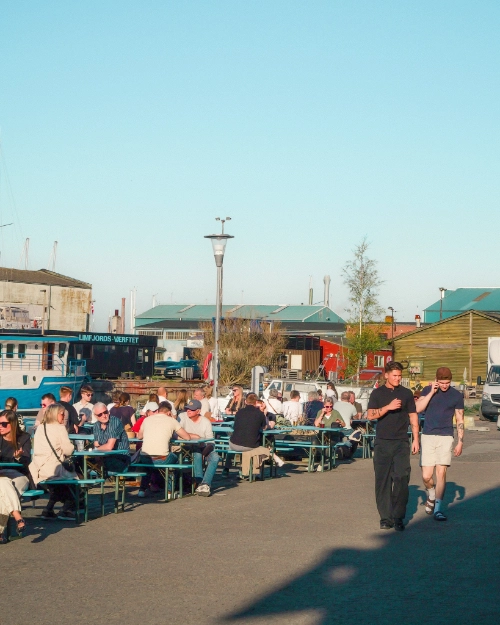
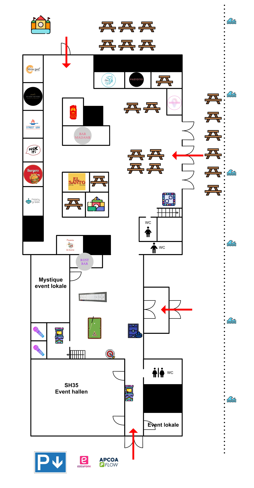

INFORMATION
Fandt du ikke svar på dit spørgsmål herunder? Kontakt os gerne! Vi står klar til at hjælpe dig med alt fra events og booking til madboder og praktisk information.

Fandt du ikke svar på dit spørgsmål herunder? Kontakt os gerne! Vi står klar til at hjælpe dig med alt fra events og booking til madboder og praktisk information.
Aalborg Streetfood har varierende åbningstider afhængigt af sæson og ugedag. Alle boder åbner og lukker samtidig, men bemærk at boderne lukker før resten af området, hvor der fortsat kan være aktiviteter og ophold. Vi anbefaler derfor at tjekke de aktuelle åbningstider inden dit besøg.
Find Aalborg Streetfood på Skudehavnsvej 35-37, 9000 Aalborg.
Du kan finde information om allergener under den enkelte bods menukort her på siden eller direkte ved boden på Aalborg Streetfood. Ved menukortene viser vi allergener som gluten, laktose, nødder og skaldyr.
Har du andre allergener eller særlige hensyn, anbefaler vi altid, at du spørger personalet ved den enkelte bod, så de kan vejlede dig bedst muligt.
Hos Aalborg Streetfood tager alle boder imod alle gængse betalingskort, MobilePay samt kontanter.
Ved køb af poletter til arkaden kan der dog kun betales med kort. Nogle enkelte klo maskiner accepterer desuden kun mønter, men det er muligt at veksle i alle boder.
Offentlig transport
Det er nemt at komme til Aalborg Streetfood med offentlig transport. Buslinje 2 stopper tæt på området, og flere andre busser har stoppesteder i Vestbyen. Kommer du med tog, ligger Aalborg Vestby Station kun ca. 10 minutters gang fra Aalborg Streetfood.
Parkering
Der er flere parkeringsmuligheder tæt på Aalborg Streetfood på Skudehavnsvej. Du finder både betalingsparkering lige ved området, som har åbent døgnet rundt (indkørsel fra Skudehavnsvej 35) og der er gratis gadeparkering i dele af Vestbyen inden for kort gåafstand. Derudover ligger C.W. Obel P-hus cirka 10 minutters gang fra streetfoodområdet.
Hos Aalborg Streetfood tager alle boder imod alle gængse betalingskort, MobilePay samt kontanter.

Aalborg Streetfood er tilgængeligt for kørestolsbrugere og personer med gangbesvær. Der er niveaufri adgang til området samt handicapvenlige toiletforhold. Området er indrettet, så alle gæster kan bevæge sig rundt og få en god oplevelse.
Som studerende får du 25% rabat på alle drikkevarer hos Aalborg Streetfood ved fremvisning af gyldigt studiekort. Derudover kan du gratis spille shuffleboard og benytte vores private karaokerum - husk blot at booke på forhånd.
Uanset om du planlægger en privat fest eller et firmaevent, skaber Aalborg Streetfood de perfekte rammer for en uformel og stemningsfuld oplevelse midt i byen. Her kan du samle venner, familie eller kollegaer til alt fra fødselsdage, polterabender og studiefester til firmafester, receptioner, julefrokoster og teamevents.
Kontakt os og hør om dine muligheder her
For at sikre en god oplevelse for alle gæster beder vi om, at du viser hensyn under dit besøg på Aalborg Streetfood.
Rygning er kun tilladt i de afmærkede områder. Medbragt mad og drikke er ikke tilladt i hverken indendørs eller udendørs områder hos Aalborg Streetfood. Hunde og andre kæledyr er velkomne, så længe de er i snor og tages hensyn til øvrige gæster.
Vi opfordrer til, at alle hjælper med at holde området pænt og rydder op efter sig selv. Respektér hinanden, vores personale og de øvrige gæster, så vi sammen kan skabe en god og hyggelig stemning for alle.
Hos Aalborg Streetfood kan du tage maden med som takeaway fra alle boder, så du nemt kan nyde dine favoritter, hvor det passer dig.
Derudover kan udvalgte retter bestilles via Wolt og leveres direkte til døren, hvis du hellere vil have oplevelsen hjemmefra.